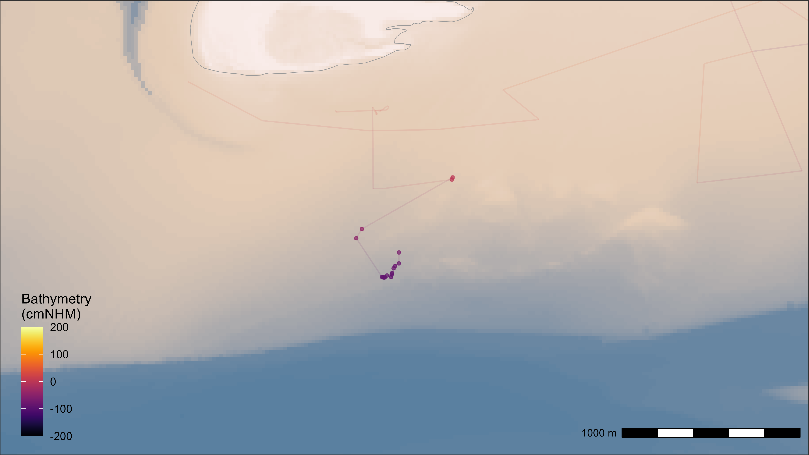

Add and plot bathymetry data
Johannes Krietsch
Source:vignettes/additional_tutorials/add_and_plot_bathymetry_data.Rmd
add_and_plot_bathymetry_data.RmdA short example of how to add bathymetry data to WATLAS data.
Bathymetry data can be found in the “Birds, fish ’n chips” SharePoint
folder: Documents/data/GIS/rasters/. To run the script set
the file path (wd) to the local copy of the folder on your
computer. The data can also be downloaded from the Waddenregister.
Load packages and data
# Packages
library(data.table)
library(tools4watlas)
library(terra)
library(ggplot2)
library(viridis)
library(scales)
# Load bathymetry data
wd <- "C:/Users/jkrietsch/OneDrive - NIOZ/Documents/MAP_DATA/"
bat <- rast(paste0(wd, "bathymetry/2024/bodemhoogte_20mtr_UTM31_int.tif"))
# Load example data
data <- data_exampleAdd bathymetry data to WATLAS data
Extract bathymetry data for each location and coarsely classify time in the tide cycle.
# add bathymetry data
data <- atl_add_raster_data(
data, raster_data = bat, new_name = "bathymetry", change_unit = 100 # m to cm
)
# classify in low, changing and high tide
data[, tide := fcase(
waterlevel <= -50, "low tide",
waterlevel >= -50 & waterlevel <= 50, "changing",
waterlevel >= 50, "high tide"
)]
# factor with levels
data[, tide := factor(tide, levels = c("low tide", "changing", "high tide"))]Plot data at low tide
Subset data at low tide and plot on bathymetry base map.
# subset low tide data
data_subset <- data[tide == "low tide"]
# create base map with bathymetry data
bm <- atl_create_bm(
data_subset,
buffer = 1000, raster_data = bat, option = "batymetry"
)
# plot data
bm +
geom_path(
data = data, aes(x, y, group = tag, colour = bathymetry), alpha = 0.1,
show.legend = FALSE
) +
geom_point(
data = data_subset, aes(x, y, color = bathymetry), size = 1,
alpha = 0.7, show.legend = TRUE
) +
guides(colour = guide_colourbar(position = "inside"), fill = "none") +
scale_color_viridis(
direction = 1, option = "inferno", name = "Bathymetry\n(cmNHM)",
limits = c(-200, 200), oob = scales::squish
) +
theme(
legend.position.inside = c(0.07, 0.2),
legend.background = element_rect(fill = NA)
)

Movement tracks colored with bathymetry data